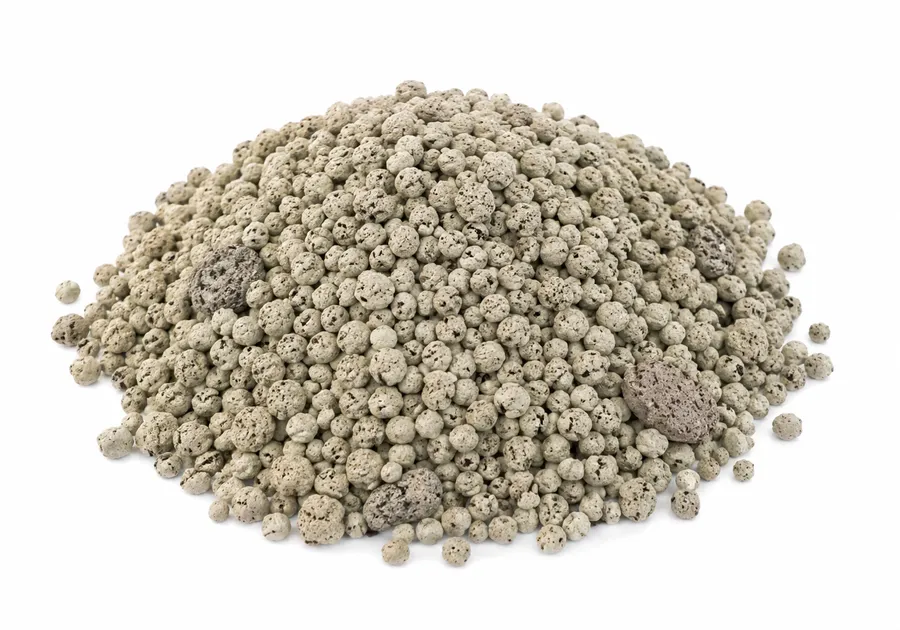
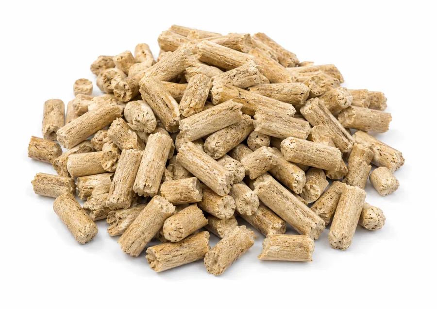
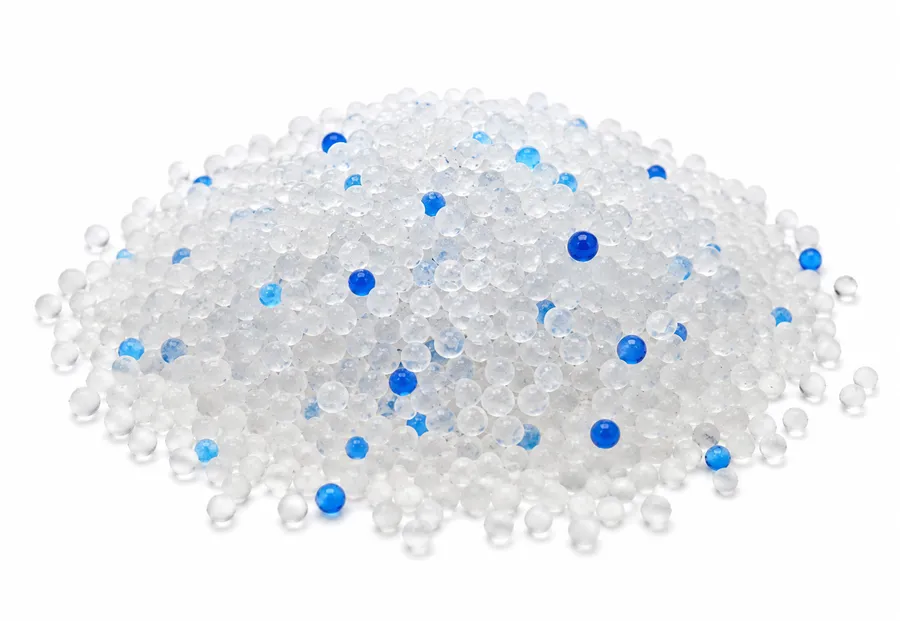
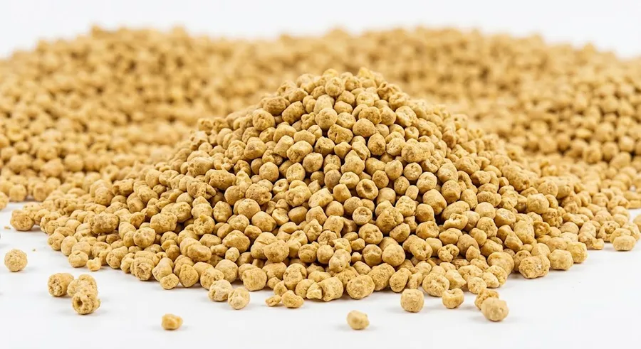

Туалет
Правильный выбор лотка и наполнителя напрямую влияет на то, будет ли кошка ходить в туалет там, где нужно.
1Выбор лотка
Открытый тип («классика») — максимальный обзор для кошки, идеален для котят и пожилых животных. Выбирайте бортики высотой 15–20 см, длина лотка — 1,5–2 длины кошки.
Закрытый бокс («приватность») — скрывает запахи и наполнитель, предотвращает распрысгивание. Некоторые кошки могут чувствовать себя в ловушке — снимите дверцу на первое время.
2Где поставить лоток?
Тихое место — вдали от шума бытовой техники и суеты коридоров.
Вдали от еды — кошки не любят справлять нужду там, где они едят или пьют.
3Виды наполнителей

Минеральный (бентонитовая глина, комкующийся) — отлично держит запах, образует крепкие комки, пылит при засыпке.

Древесный (прессованные опилки, впитывающий) — бюджетный, разваливается в труху при намокании, можно смывать в унитаз малыми порциями, экологичен.

Силикагель (впитывающий) — максимальная впитываемость и устранение запаха, но громко хрустит и может отпугнуть пугливых кошек.

Растительные наполнители (соевые, кукурузные, зерновые) — идеально смываются в унитаз, растворяются без остатка, безопасны при случайном поедании, но выше ценой и привлекают грызунов при хранении на даче.
4Золотое правило лотков: N + 1
У вас должно быть на один лоток больше, чем кошек в доме. Это предотвращает стресс и конфликты за территорию.
5Уход и гигиена
Ежедневно: уборка комочков и твёрдых отходов 1–2 раза в день.
Раз в 2 недели/месяц: полная замена и мытьё лотка мягким средством.
Материал имеет значение: пластик доступнее, но впитывает запахи со временем и содержит среду для бактерий за счёт сколов и царапин. Керамика или металл дезинфицируются гигиеничнее, но дороже.
6Скрытые угрозы
Ароматизаторы: запах лаванды приятен вам, но отталкивает кошку с её чутким носом.
Шумные локации: лоток рядом со стиральной машиной — путь к внезапному испугу и отказу от места.
7Если кошка игнорирует лоток
Медицина: сначала исключите цистит или МКБ у ветеринара.
Поведение: проверьте чистоту, смените тип наполнителя или местоположение.
Кошки могут игнорировать туалет из-за стресса, неподходящего наполнителя, сильного запаха или пугающих звуков при контакте с частичками наполнителя.
Другие темы раздела
Информация в приложении собрана из открытых источников и опыта владельцев кошек. Она не заменяет консультацию и осмотр у ветеринара. Решения о здоровье и уходе за питомцем принимает владелец — при любых сомнениях обратитесь к ветеринару.
Эти статьи есть и в приложении Cat First
Под рукой в любой момент — даже без интернета.